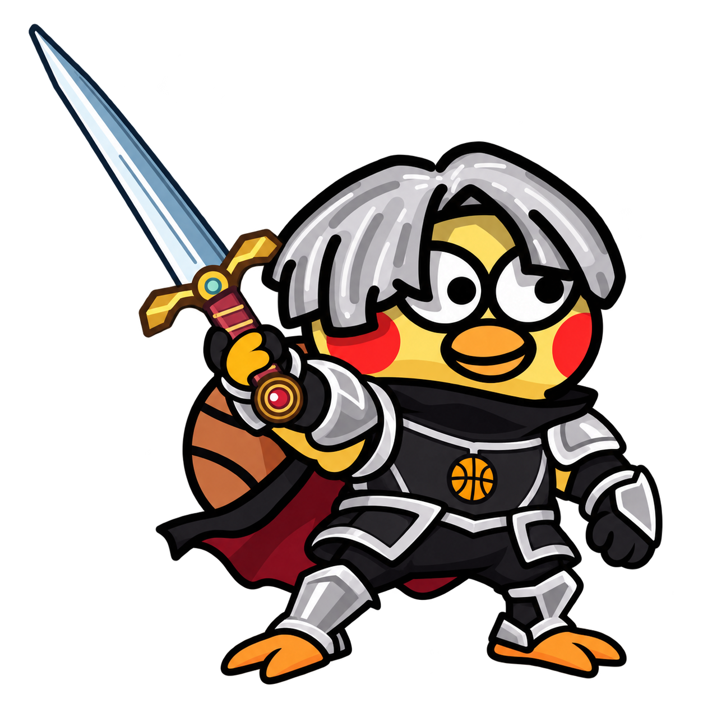

消除 · 猫咪陪伴 GAME 01 王果冻的消消小窝 点心连成一片，小鱼干装进口袋。玩三消或点点连消，摸摸小猫，把小窝慢慢布置成喜欢的样子。 三消 / 点点连消小猫养成Windows 桌宠 进入小窝 →玩法与版本说明
冒险 · 并肩作战 GAME 02 王果冻骑士：荒原誓约 与王德敏公主踏过十二章旅途，寻宝、升级装备、迎战恶龙，最后接蔡乙先王子回家。 十二章闯关王果冻 / ikun 骑士装备成长 启程冒险 →玩法与操作说明